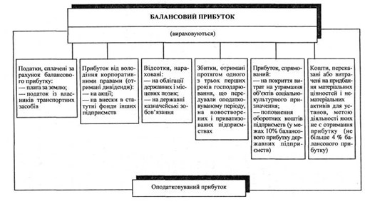
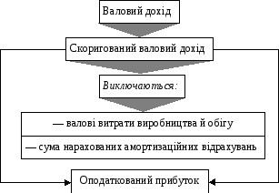

План
1. Становлення оподаткування прибутку
2. Чинний порядок оподаткування прибутку
1. СТАНОВЛЕННЯ ОПОДАТКУВАННЯ ПРИБУТКУ
Кінцевим результатом діяльності підприємств як суб'єктів господарювання є отриманий ними валовий дохід, що відображує заново створену вартість. Валовий дохід визначається як різниця між виручкою від реалізації, матеріальними і прирівняними до них витрат.
Чистий дохід нарівні підприємства має кілька форм, у тім числі форму прибутку.
На прибуток впливає такий елемент валового доходу, як заробітна плата.
Оскільки прибуток визначається як різниця між обсягом реалізації і собівартістю продукції (робіт, послуг), на формування прибутку справляє вплив і державна політика щодо визначення собівартості, її формування.
Досвід країн з розвиненою ринковою економікою свідчить, що об'єктом оподаткування здебільшого є прибуток підприємств. Податок на прибуток належить до тих податків, з допомогою яких активно реалізується регулююча функція щодо виробництва інших сфер господарської діяльності. Фіскальній функції податку на прибуток належить другорядна роль.
Досвід України у створенні системи оподаткування прибутку (доходу) свідчить про брак чіткої державної концепції податкової політики.
2. ЧИННИЙ ПОРЯДОК ОПОДАТКУВАННЯ ПРИБУТКУ
Платниками податку на прибуток є резиденти та нерезиденти. З числа резидентів платниками податку є суб'єкти господарської діяльності, бюджетні, громадські та інші підприємства, установи й організації, які здійснюють діяльність, спрямовану на отримання прибутку на території України і за її межами. З числа нерезидентів платниками податку є фізичні особи, а також юридичні особи, створені у будь-якій організаційно-правовій формі, які отримують доходи, джерелом походження котрих є Україна (крім установ і організацій, що мають дипломатичний статус).
Платник податку, який має відокремлені підрозділи (філії), може прийняти рішення щодо сплати консолідованого податку на прибуток.
Обчислення оподаткованого прибутку здійснюється виключенням із суми скоригованого валового доходу валових витрат платника податку, а також нарахованих амортизаційних відрахувань.
Валовий дохід - це загальна сума доходу платника податку від усіх видів діяльності, отриманого (нарахованого) протягом звітного періоду в грошовій, матеріальній або нематеріальній формах як на території України, так і за її межами.
Визначаючи валовий дохід, ураховують:
- загальні доходи від продажу товарів (робіт, послуг), а також від продажу цінних паперів, крім операцій з їх первинного випуску (розміщення) та кінцевого погашення;
- доходи від здійснення банківських, страхових та Інших операцій, пов'язаних із наданням фінансових послуг, від торгівлі валютними цінностями, цінними паперами, борговими зобов'язаннями та вимогами;
- доходи від спільної діяльності у вигляді дивідендів, отриманих від нерезидентів, відсотків, роялті, володіння борговими вимогами, від здійснення операцій лізингу (оренди);
- доходи, не враховані під час обчислення валового доходу у попередніх періодах і виявлені у звітному періоді;
- доходи з інших джерел і від позареалізаційних операцій (сум безповоротної фінансової допомоги, а також вартості товарів (робіт, послуг), безоплатно отриманих платником податку у звітному періоді; сум невикористаної частини коштів, повернених із страхових резервів; сум страхового резерву, використаних не за призначенням; вартості матеріальних цінностей, переданих платнику податку згідно з договорами зберігання і використаних ним у власному виробничому й господарському обороті; сум отриманих штрафів, неустойки, пені; сум державного мита, раніше сплаченого і поверненого за рішенням суду);
- суму перевищення виручки від продажу над балансовою вартістю окремих об'єктів основних фондів групи 1 та нематеріальних активів.
Отже, визначення валового доходу для оподаткування значно відрізняється від класичного (різниця між виручкою від реалізації матеріальними, а також прирівняними до них витратами). У валовий дохід запропоновано включити загальні доходи від реалізації товарів (робіт, послуг), тобто виручку від реалізації.
До складу валового доходу, а отже, і скоригованого валового доходу, не включаються:
- суми акцизного збору та податку на додану вартість;
- суми або вартість майна, отримані платником податку як компенсація за примусові відчуження державою іншого майна платника податку;
- суми коштів або вартість майна, отримані платником податку з рішення суду як компенсація його витрат або збитків;
- суми надмірно сплачених податків, зборів, що повертаються платнику податку з бюджету, якщо вони не були включені до складу валових витрат;
- суми коштів або вартість майна, що надходять у вигляді прямих інвестицій або реінвестицій у корпоративні права;
- суми одержаного платником податку емісійного доходу;
- номінальна вартість узятих на облік, але неоплачених цінних паперів, які засвідчують відносини позики, а також платіжних документів, виданих боржником на ім'я платника податку як (підтвердження заборгованості боржника);
- доходи від спільної діяльності на території України без створення юридичної особи, дивіденди, отримані від інших платників податку, що оподатковувалися за їхньої виплати;
- кошти або майна, які повертаються власнику корпоративних прав, емітованих юридичною особою, після повної її ліквідації, або після закінчення договору про спільну діяльність;
- кошти або майно, що надходять у вигляді міжнародної технічної допомоги, яка надається іншими державами;
- кошти, що надаються платнику податку з Державного інноваційного фонду на поворотній основі;
- вартість основних фондів, безоплатно отриманих платником податку з метою здійснення їх експлуатації в передбаченому законодавством порядку.
Слід звернути увагу, що датою збільшення валового доходу вважається дата, що припадає на податковий період, протягом якого першою сталася подія:
- зарахування коштів покупця або замовника на банківський рахунок платника податку в оплату товарів (робіт, послуг), що підлягають реалізації (коли реалізація відбувається за готівку - дата її оприбуткування в касі платника податку);
- відвантаження товарів, а для робіт (послуг) - дата фактичного надання результатів робіт (послуг) платником податку.
За товарообмінних (бартерних) операцій датою збільшення валового доходу вважають дату:
- відвантаження товарів, а для робіт (послуг) - дату фактичного надання послуг платником податку;
- оприбуткування товарів, а для робіт (послуг) - дату оформлення документа, що засвідчує факт отримання результатів робіт (послуг) платником податку.
Для визначення сум оподаткованого прибутку важливе значення має розрахунок валових витрат.
До складу валових витрат слід включати:
1. Суми будь-яких витрат, сплачених (нарахованих) протягом звітного періоду і пов'язаних з підготовкою, організацією, веденням виробництва, продажем продукції (робіт, послуг), та охороною праці. Таким чином, у валові витрати будуть включені матеріальні витрати і витрати на оплату праці.
Датою збільшення валових витрат вважається дата, котра припадає на податковий період, протягом якого раніше відбувалася подія:
- списання коштів з банківських розрахунків на оплату товарів;
- оприбуткування товарів, а для робіт (послуг) - дата фактичного їх отримання.
Витрати на оплату праці включають витрати (в грошовій або натуральній формі) на виплату основної та додаткової заробітної плати, інших видів заохочень працівників підприємств, виходячи з тарифних ставок, а також винагород і виплат за виконання робіт (послуг) згідно з договорами цивільно-правового характеру.
До складу валових витрат відносять також будь-які витрати на виплату або нарахуванням відсотків за борговими зобов'язаннями протягом звітного періоду, які пов'язані з веденням господарської діяльності платником податку.
2. Витрати на поточний і капітальний ремонт, реконструкцію, модернізацію, технічне переоснащення та інші види поліпшення основних фондів, у сумі, що не перевищує 5% сукупної балансової вартості груп основних фондів на початок звітного року.
3. Суми внесених (нарахованих) податків, зборів (загальнодержавних і місцевих), установлених Законом України "Про систему оподаткування", за винятком: податку на прибуток, податку на нерухомість, податку на дивіденди, податків на доходи нерезидентів, податків на доходи від грального бізнесу.
4. Суму перевищення балансової вартості запасів покупних товарів (крім активів, що підлягають амортизації, цінних паперів та деривативів), матеріалів, сировини, комплектуючих виробів та напівфабрикатів на складах, у незавершеному виробництві, готової продукції на початок звітного кварталу над їхньою балансовою вартістю на кінець того самого звітного кварталу.
Якщо вартість указаних запасів на кінець звітного кварталу перевищує їхню вартість на початок того самого звітного кварталу, різниця зараховується до складу валових витрат платника податку у звітному періоді.
5. Сума перевищення балансової вартості над виручку від продажу окремих об'єктів основних фондів групи 1 та нематеріальних активів.
6. Суми коштів або вартість майна, добровільно перерахованих (переданих) до Державного бюджету України або бюджетів територіальних громад, до неприбуткових організацій (не більше 4% оподаткованого прибутку попереднього звітного періоду).
7. Суми коштів, переказаних підприємствами всеукраїнських об'єднань осіб, що постраждали внаслідок Чорнобильської катастрофи, коли на цих підприємствах як на основному місці роботи працює не менше 75% таких осіб, згаданим об'єднанням для проведення благодійної діяльності (не більше 10% оподаткованого прибутку попереднього звітного періоду).
8. Суми коштів, унесених у страхові резерви (в порядку, передбаченому Законом "Про оподаткування прибутку підприємств").
9. Суми витрат, не включених до складу валових витрат минулих звітних податкових періодів у зв'язку з утратою або псуванням документів чи допущенням помилок у розрахунках податкового зобов'язання, виявлених у звітному податковому періоді.
10. Суми безнадійної заборгованості в частині, що не була віднесена до валових витрат, коли відповідні дії щодо стягнення таких боргів не дали позитивного результату, а також суми заборгованості, щодо яких минув термін позовної давності.
Не дозволяється включати до складу валових витрат платника податку такі витрати:
- не пов'язані з веденням господарської діяльності;
- на придбання торгових патентів;
- сплату штрафів та неустойки;
- на утримання органів управління об'єднань платників податку, включаючи утримання холдингових компаній;
- виплата емісійного доходу на користь емітента корпоративних прав;
- виплата дивідендів;
- суми збитків платника податку, понесених у зв'язку з продажем товарів (робіт, послуг) або їх обміном за цінами, нижчими, ніж звичайні.
Вивчення валових витрат, особливостей їхнього формування дає змогу зробити висновки, що за складом і обсягом вони перевищують витрати, які підприємство включає в собівартість, що зменшує суму оподаткованого прибутку.
Це досягається у зв'язку з віднесенням до складу валових витрат: використання прибутку на благодійну діяльність; використання прибутку на фінансування соціальної інфраструктури підприємств та інших витрат.
Зменшення оподаткованого прибутку також: досягається внаслідок збільшення суми амортизаційних відрахувань, які виключаються зі скоригованого валового доходу.
Пільги за оподаткування прибутку. Звільняється від оподаткування прибуток:
- підприємств від продажу на митній території України спеціальних продуктів дитячого харчування власного виробництва, спрямований на збільшення виробництва та зменшення роздрібних цін таких продуктів;
- підприємств, що засновані всеукраїнськими громадськими організаціями інвалідів, від продажу товарів (робіт, послуг), крім прибутку, отриманого від грального бізнесу, якщо протягом попереднього звітного (податкового) періоду кількість інвалідів за основним місцем роботи становить не менше 50% чисельності працюючих, а фонд оплати їхньої праці;
- не менше 25% суми витрат на оплату праці, що включається до складу валових витрат;
- прибуток підприємств, отриманий за рахунок міжнародної технічної допомоги, яка надається на безоплатній основі для виведення енергоблоків Чорнобильської АЕС з експлуатації.
Ставки оподаткування прибутку. Основну ставку податку встановлено в розмірі 18% до об'єкта оподаткування. Крім того, передбачено й інші ставки оподаткування.
Термін сплати податку на прибуток. Платники податку не пізніше 25 числа місяця, що настає за звітним кварталом, подають податкову декларацію про оподатковуваний прибуток за звітний квартал, розраховану наростаючим підсумком з початку звітного фінансового року. Податок сплачується в бюджет не пізніше 20 числа місяця, наступного за звітним кварталом.
Платники податку на прибуток подають бухгалтерську звітність за результатами своєї діяльності за рік тільки статистичним органам, тобто подання бухгалтерської звітності податковим адміністраціям не є обов'язковим.
Відповідальність платників податку на прибуток. Платники податку, які на час перевірки податковим органом не мають податкових декларацій про прибуток і розрахунків, пов'язаних з нарахуванням і сплатою податку, сплачують штраф у розмірі десяти неоподатковуваних мінімумів доходів громадян за одноразове порушення. За кожні наступні такі порушення, допущене протягом дванадцяти місяців після першого, сплачується штраф у розмірі десяти неоподатковуваних мінімумів доходів громадян, помножених на кількість таких порушень.
Платники податку, які не подали або несвоєчасно подали до податкового органу податкову декларацію про прибуток, розрахунок податку на прибуток, платіжні доручення щодо перерахування податку до бюджету, сплачують штраф у розмірі 10% від суми нарахованого податку за кожний випадок порушення.
Якщо має місце приховування або заниження сум податку на прибуток, платник сплачує:
- суму донарахованого податку;
- штраф у розмірі 30% від донарахованої суми податку;
- пеню, обчислену, виходячи зі 120% облікової ставки Національного банку України, що діяла на момент сплати, нараховану на повну суму недоїмки (без урахування штрафів) за весь її строк.